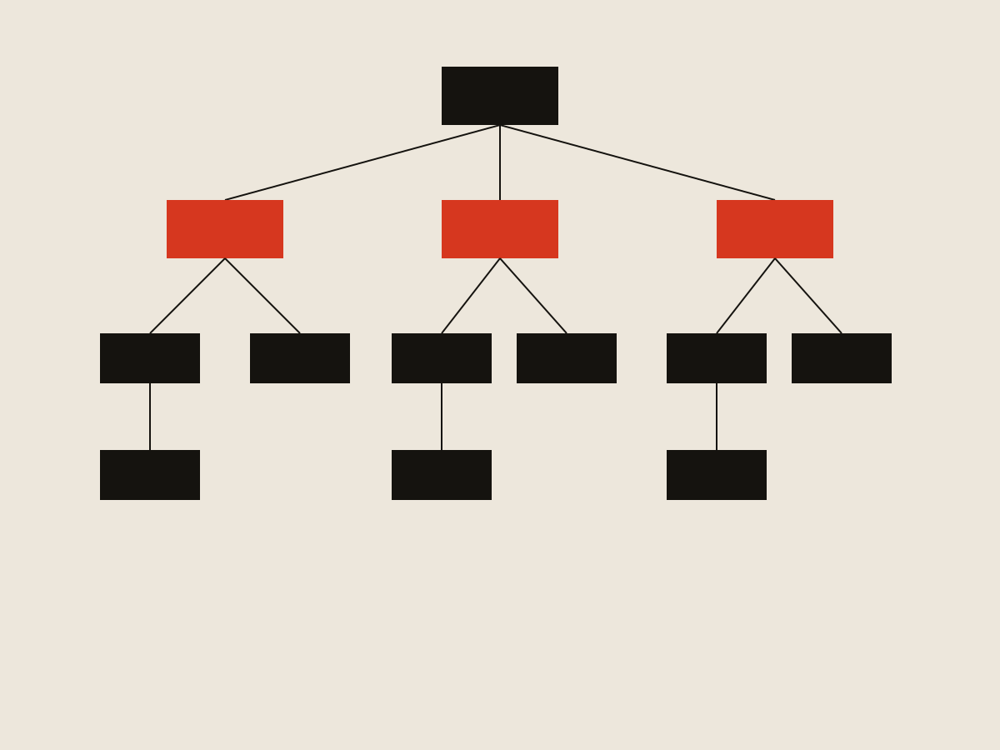
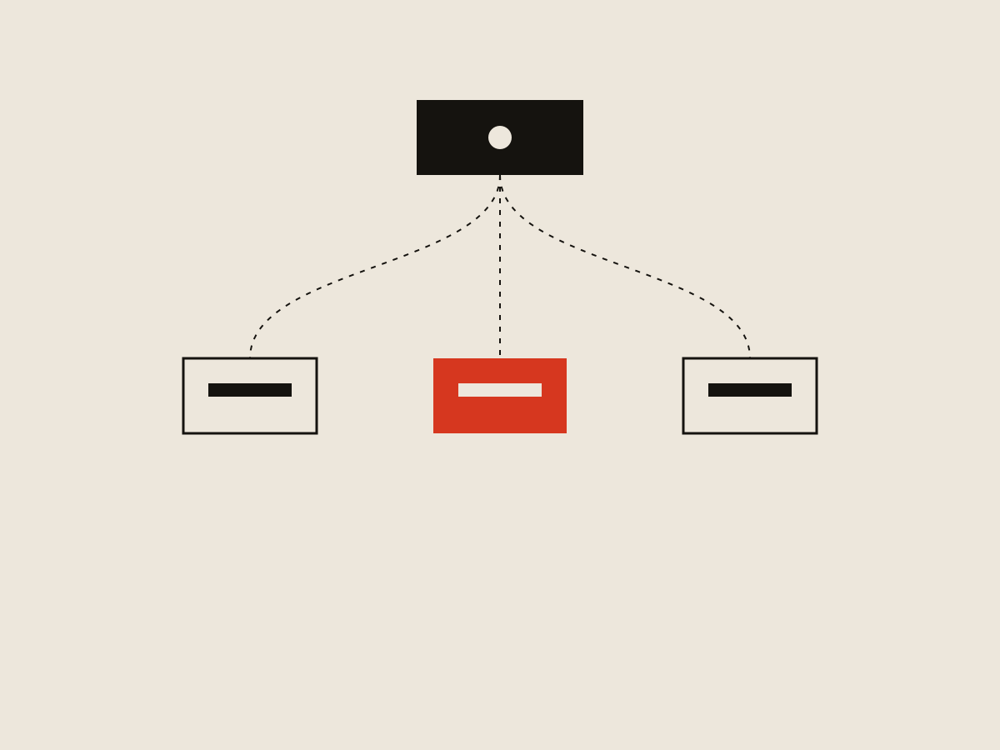
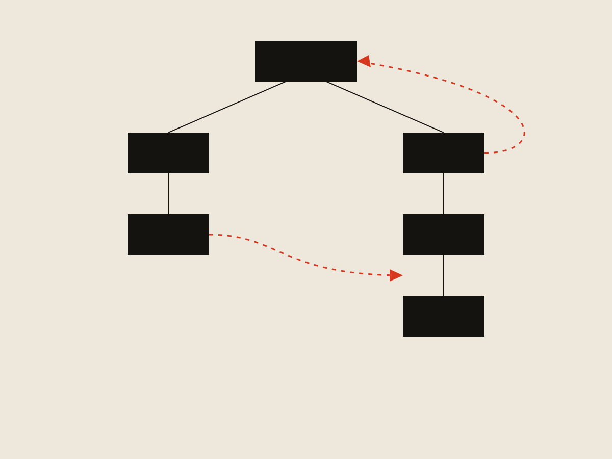

Identity Migration / K-12 Job Spot
Salvaging a migration redesign after the ideal fix died two days before launch

The short version
Only half the users who started migrating from the old K-12 Job Spot to the new one actually finished — one of the biggest risks to the launch. The flow forced users to understand Frontline's own account architecture before they could sign in. I proposed flipping it: user enters an email, the system figures out the account type and routes them automatically. Engineering couldn't build the real-time detection in time, so two days before the final sprint we fell back to a blunter, date-based model. It still worked — because the redesign was never really about the routing mechanism. It was about cutting the number of decisions a user had to make.
Context
Launching a new version of K-12 Job Spot meant migrating users from a legacy identity system to a new platform-owned identity and authentication system. Early-adopter metrics showed only about half of the users who started migration completed it. The migration flow had become one of the highest-risk obstacles to launching the new platform at all.
Problem
The existing flow asked users to self-identify their account type before signing in: new K-12 Job Spot account, legacy account, or no account. Each choice branched into more screens and confirmations — a user could hit anywhere from 8 to 10 screens before getting through. Worse, legacy-account users were asked to review and validate migrated profile data immediately after signing in: extra work at the exact moment they were just trying to get into the product.
The constraints made this harder than a typical login redesign:
- Legacy and modern databases couldn't communicate freely.
- Authentication was owned by a separate platform team, not by K-12 Job Spot.
- K-12 Job Spot couldn't customize the platform-owned login screens.
- Legacy passwords didn't always meet modern security requirements.

Questioning the profile-migration assumption
Before redesigning anything, I pushed back on an assumption baked into the existing flow: that migrating legacy profile data was worth the friction it added. I asked the PM to pull the numbers. About 80,000 profiles had been created or updated in the prior year, and fewer than half held meaningful information beyond the basic account fields — most of it incomplete or outdated. That gave us grounds to deprioritize profile migration and point the redesign at a single goal: get the user signed in.
Cutting scope isn't the interesting part. Cutting it because the data said the preserved thing had little value is — it turned a vague "reduce friction" mandate into a specific, defensible decision.
The solution I proposed
Instead of asking users to figure out which account path applied to them, I proposed flipping the model. The user enters their email; the system determines behind the scenes whether it belongs to a new K-12 Job Spot account, an existing Frontline identity account, or a legacy account, then routes them to the right platform-owned screen automatically. One input from the user, all the branching logic moved to the system. I worked with the PM and tech lead to map the routing logic against what was actually feasible on the identity platform's side.

The pivot
Two days before the final sprint before launch, engineering came back with bad news: the identity platform team couldn't build the real-time account-type detection the routing model depended on. The constraint was two-sided — a genuine platform limitation, and an identity team already at (and a little past) capacity, with no room to take on the work in the time we had.
The elegant version was dead. We had two days to land on something shippable.
What shipped instead
We fell back to a simpler, date-based self-selection model. If a user hadn't created or logged into their account since April 2026, we told them they'd need a new one. The user got two buttons — sign in, or create an account. If someone tried to create an account but already had one, we redirected them to sign in; if someone tried to sign in without an account, we redirected them to creation. Inline error messaging covered the most likely failure mode — a user entering old but technically-correct legacy credentials — by telling them plainly they needed a new account rather than dumping them on a generic error.
It wasn't the system doing the work for the user the way the original concept did. But it kept the same underlying principle: reduce the decision to the fewest possible choices, and handle edge cases with clear guidance instead of more screens. Sign-in landed at 2 screens, account creation at 3, and even a user who guessed wrong on their first try topped out around 4 — down from 8–10.

Outcome
Migration completion went from 50% to 88%.
Key lessons
The biggest lesson wasn't about identity systems — it was about when to validate technical feasibility. We aligned on the ideal solution, believed it was buildable, and only found out two days before the final sprint that a dependency team's capacity made it impossible in the time we had. That's an expensive point in a project to learn something like that. A capacity gut-check with the identity team's lead earlier — even an informal one — might have gotten the ideal version built, or at least let us plan the fallback with more than two days of runway.
The more reassuring lesson: the fallback worked because the redesign was never really about the routing mechanism. It was about cutting the number of decisions a user had to make. The email-first model was the more sophisticated way to do that; the date-based model did the same job with a blunter tool. Getting the underlying principle right is what let the project survive losing its ideal implementation.
What I'd do differently
I'd pull in the identity platform team — or at least get a capacity gut-check from their lead — before committing to the routing design, not after. A five-minute conversation earlier could have surfaced the capacity issue before it became a two-day scramble.